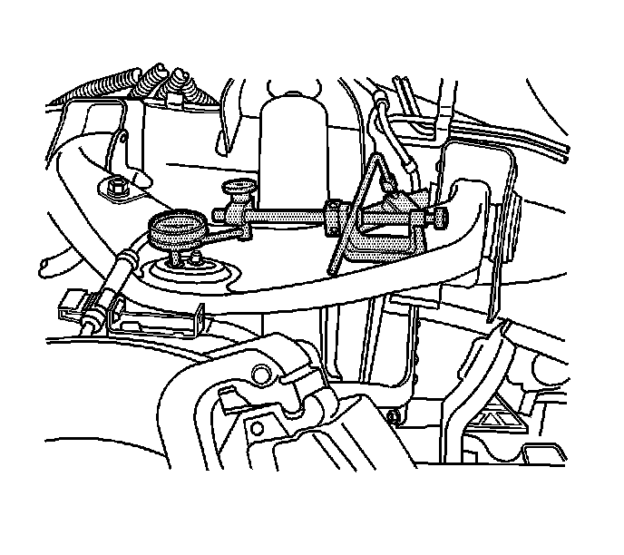

Ball Joint Inspection (Upper Ball Joint)
Ball Joint Inspection (Upper Ball Joint)
Tools Required
J 8001 Dial Indicator Set

1. Raise and support the vehicle. Refer to Lifting and Jacking the Vehicle.
2. With the wheel and tire on the vehicle, lift the suspension corner by hand to determine if any looseness is present. If vertical free play is experienced proceed with the following instructions.
3. Remove the wheel and tire.
4. Support the lower control arm with a floor stand or jack, as far outboard as possible.
5. If a seal is cut or torn, replace the ball joint.
6. Clean and inspect the ball joint seals for cuts or tears. If the ball joint seals are damaged, replace the ball joint. Refer to Upper Control Arm Replacement.
7. Check the wheel bearing for looseness in the wheel bearing is present. Refer to Wheel Bearings Diagnosis. Wheel Bearings Diagnosis
8. Check the upper ball joint for vertical looseness.
9. Remove the lower shock absorber mounting bolt. This will ensure that the suspension is unloaded.
10. Install and position the dial indicator from J 8001 against the rim of the upper ball joint.
11. Apply downward force to the upper control arm and zero the indicator pointer/pad against the rim of the upper ball joint.
12. Release the arm and check the dial indicator. The dial indicator reading should be no more than 2 mm (0.079 in). If the reading is too high, replace the upper control arm. Refer to Upper Control Arm Replacement (1500 Series), (2500 Series).